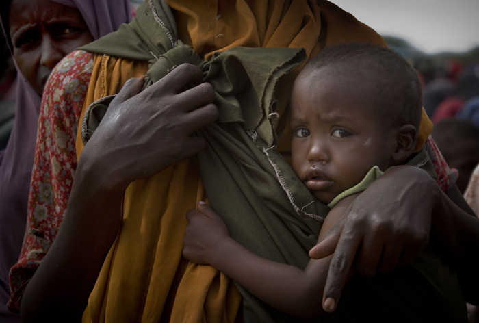

Der Text schließt mit den Worten: "Dass durch die Trockenheit im Frühjahr die Ernte 2011 wohl niedriger als 2010 ausfallen wird, macht bisher weder den Bauern noch den Agrarhändlern Sorgen. Denn weniger Ernte bedeutet höhere Margen bei höheren Preisen. Und die zahlen in der Regel die Verbraucher."
Inzwischen leidet die USA unter der größten Dürre seit Jahrzehnten. Weit mehr als die Hälfte des Landes ist betroffen. Die Maiserträge sind teilweise um 80% geschrumpft. Da 40% der eingeplanten Ernte für Agrosprit verplant waren, stiegen die Getreidepreise gewaltig.
"Afrika sieht einer vielleicht noch größeren Hungerkatastrophe als 2008 entgegen."
Quelle: <!-- m --><a class="postlink" href="http://www.timepatternanalysis.de/Blog/2012/08/23/usa-missernte-treibt-nahrungsmittelpreise-an/">http://www.timepatternanalysis.de/Blog/ ... preise-an/</a><!-- m -->
[Anhang: <!-- ia0 -->111012ostafrikaPM_01_unicef.jpg<!-- ia0 -->]
Vor diesem Hintergrund präsentierte kürzlich Minister Backhaus auf der von der Staatskanzlei initiierten "Export-Tour" erneut eine Studie von 2011 des Agrarmarketing Mecklenburg-Vorpommern (AMV) e.V., die belegen soll, dass die Ernährungswirtschaft des Landes nur gering an Exportgeschäften beteiligt ist.
Da es nach dem Aus für die CMA im Jahr 2009 keine zentrale Agentur mehr gibt, die für Unternehmen, die im Exportbereich tätig werden möchten, als Ansprechpartner fungiert, ist jetzt Eigeninitiative gefragt, um von der rasanten Preisentwicklung am Getreidemarkt provitieren zu können.
Investitionen in Getreidesilos sind Gold wert.
Sie machen weitere Investitionen möglich.
